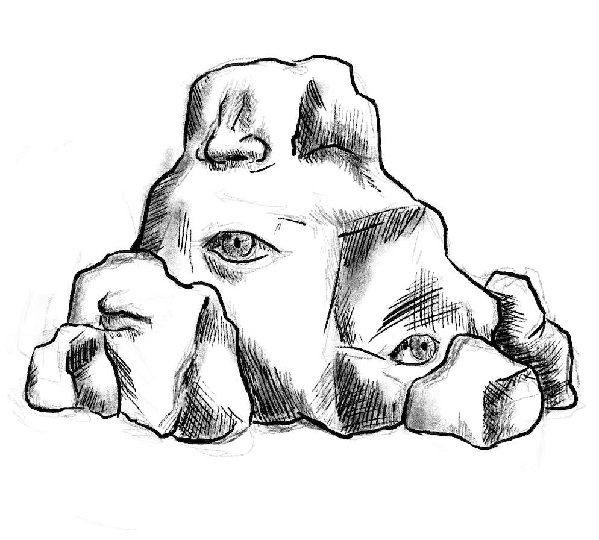

<!doctype html>
<html lang="zh-CN">
<head>
  <meta charset="utf-8" />
  <meta name="viewport" content="width=device-width, initial-scale=1" />
  <title>中国传统壁画配色库 · Ancient Chinese Mural Color Bank</title>
  <script src="https://cdn.tailwindcss.com"></script>
  <script src="https://unpkg.com/react@18/umd/react.development.js" crossorigin></script>
  <script src="https://unpkg.com/react-dom@18/umd/react-dom.development.js" crossorigin></script>
  <script src="https://unpkg.com/@babel/standalone/babel.min.js"></script>
  <style>
    body::before{
      content:""; position:fixed; inset:0; z-index:-2;
      background:
        url('yellou.png') center/cover no-repeat,
        radial-gradient(ellipse at top, rgba(229,216,198,0.9), rgba(240,233,222,0.95));
    }
    body::after{
      content:""; position:fixed; inset:0; z-index:-1; opacity:.05;
      background-image:
        linear-gradient(45deg, #a38d6d 1px, transparent 1px),
        linear-gradient(-45deg, #a38d6d 1px, transparent 1px);
      background-size:12px 12px;
    }
    .panel-container { max-height: none; overflow-y: auto; }
  </style>
</head>
<body class="min-h-screen text-neutral-800">
  <div id="root"></div>

  <script type="text/babel" data-presets="env,react">
    const {useMemo,useState,useEffect} = React;

    /* ----------------------------- Utilities ----------------------------- */
    const cx = (...c)=>c.filter(Boolean).join(' ');
    const uniq = (arr)=>[...new Set(arr)];
    const createIndex = (list)=>Object.fromEntries(list.map(x=>[x.id,x]));
    const byUbiquityDesc = (a,b)=>( (b && b.ubiquity)||0 ) - ( (a && a.ubiquity)||0 );
    const norm = (s)=>String(s||'').toLowerCase();
    const colorValue = c => (c && (c.color || c.hex)) || '#999';
    const colorLabel = (id, idx)=> (idx && idx[id] && idx[id].name) || id || '—';

    const safeJSON = (str, fallback) => { try { return JSON.parse(str); } catch { return fallback; } };

    /* ---------------------------- Routing -------------------------------- */
    const ALLOWED = new Set(['palettes','murals','colors','about','linker']);
    const Route = {
      to: (type, id)=> id ? `${type}:${id}` : type,
      parse: (s)=>{
        const raw = String(s||'').replace(/^#/, '');
        if(!raw) return {type:'palettes', id:null};
        const [type, id] = raw.split(':');
        if (ALLOWED.has(type) || type==='color' || type==='info') return {type, id: id||null};
        return {type:'palettes', id:null};
      },
      write: (page)=>{ if(location.hash !== `#${page}`) location.hash = `#${page}`; }
    };

    const store = {
      get: (k, fallback)=>{ try{ const v=localStorage.getItem(k); return v==null? fallback : v; }catch{ return fallback; } },
      set: (k,v)=>{ try{ localStorage.setItem(k, v); }catch{} }
    };

    /* ------------------------------ Data --------------------------------- */
    const COLORS = [
      { id:'C-040', name:'Lotus Root Pink 藕荷', color:'#E0C9D1', hue:'pink', shade:'light', harmonies:['complementary:pale-teal','analogous:lavender-pink'], pigment:'Madder lake with white. | 中文：茜素湖加白。', making:'Organic red diluted with lead white. | 中文：以铅白稀释有机红得到淡粉。', notes:'Lotus-root pink for garments, floral borders. | 中文：柔和的藕荷粉，常用于衣饰与花卉边饰。', images:[], examples:[] },
      { id:'C-051', name:'Faded Pink 退红', color:'#F8C3CD', hue:'pink', shade:'light', harmonies:['complementary:pale-teal','analogous:rose-pink'], pigment:'Madder lake with white. | 中文：茜素湖加白。', making:'Diluted pink from organic red. | 中文：由有机红稀释而成的浅粉。', notes:'Faded pink for aged fabrics, petals. | 中文：表现褪色织物与花瓣的淡粉色。', images:[], examples:[] },
      { id:'C-055', name:'Consort Pink 妃色', color:'#ED5736', hue:'red', shade:'light', harmonies:['analogous:peach','complementary:turquoise'], pigment:'Safflower/madder lake with white. | 中文：红花或茜素湖加白。', making:'Organic pink lake floated over lead white. | 中文：在铅白上覆以有机粉红湖料。', notes:'Delicate courtly pink in garments and floral borders. | 中文：衣饰与花边常见的柔雅粉色。', images:[], examples:[] },
      { id:'C-056', name:'Peach Pink 桃红', color:'#F47983', hue:'red', shade:'light', harmonies:['analogous:rose','complementary:sea-green'], pigment:'Madder/safflower lake. | 中文：茜素/红花湖。', making:'Transparent pink glazes for petals and cheeks. | 中文：用于花瓣与面颊的透明粉红罩染。', notes:'Spring peach blossoms, rouge tints, romantic motifs. | 中文：春日桃花、胭脂晕与浪漫题材之色。', images:[], examples:[] },
      { id:'C-050', name:'Peach Blush 酡颜', color:'#F9906F', hue:'red', shade:'light', harmonies:['complementary:turquoise','analogous:peach'], pigment:'Madder lake. | 中文：茜素湖。', making:'Light red from plant dye. | 中文：由植物染料得到的浅红。', notes:'Blush tone for faces, flowers. | 中文：用于面颊晕染与花朵的桃粉色。', images:[], examples:[] },
      { id:'C-016', name:'Crabapple Red 海棠红', color:'#DB5A6B', hue:'red', shade:'mid', harmonies:['complementary:mint-green','analogous:pink-red'], pigment:'Madder lake or organic plant dye. | 中文：茜素湖或其他植物性有机染料。', making:'Dye extracted from madder roots; bound with animal glue. | 中文：由茜草根提取染料，以动物胶调制。', notes:'Delicate blossom pink-red used for floral motifs and robe linings. | 中文：细腻的花瓣粉红，常用于花卉纹样与衣袍里衬。', images:[], examples:[] },
      { id:'C-017', name:'Madder Red 茜色', color:'#CB3A56', hue:'red', shade:'mid', harmonies:['complementary:turquoise','analogous:rose'], pigment:'Madder root pigment. | 中文：茜草根颜料。', making:'Boiled madder roots yielding alizarin; fixed with alum. | 中文：煮煮茜草根获得茜素，并以明矾固色。', notes:'Classic textile dye in Tang and Song clothing, associated with vitality. | 中文：唐宋服饰常用的经典染色，寓意生机与活力。', images:[], examples:[] },
      { id:'C-052', name:'Scarlet 緋色', color:'#F04B22', hue:'red', shade:'mid', harmonies:['analogous:vermilion','complementary:teal'], pigment:'Vermilion or red ochre; safflower/carmine glazes. | 中文：朱砂或红赭；并可覆以红花/胭脂透明层。', making:'Mineral red layered with organic lake for glow. | 中文：矿物红上叠加有机湖料以增强通透光泽。', notes:'Ceremonial scarlet for banners, seals, festive trims. | 中文：用于旗帜、玺印与节庆饰边的礼仪之赤。', images:[], examples:[] },
      { id:'C-053', name:'Bright Red 大红', color:'#D81E06', hue:'red', shade:'mid', harmonies:['complementary:jade-green','analogous:orange-red'], pigment:'Cinnabar with red ochre or organic lake. | 中文：朱砂配红赭或有机湖料。', making:'Dense red body color over white ground. | 中文：于白底上铺设致密的主体红。', notes:'Iconic saturated red for wedding textiles and lanterns. | 中文：婚礼织物与灯笼常用的高饱和大红。', images:[], examples:[] },
      { id:'C-054', name:'Vermilion Red 朱红', color:'#FF4C00', hue:'red', shade:'mid', harmonies:['complementary:malachite','split-complementary:cyan-olive'], pigment:'Cinnabar (HgS) or synthetic vermilion. | 中文：辰砂（HgS）或合成朱砂。', making:'Finely ground vermilion bound with animal glue. | 中文：细磨朱砂，以动物胶调和。', notes:'Doors, talismans, architectural beams; auspicious tone. | 中文：用于门窗、符箓与梁枋的吉祥朱红。', images:[], examples:[] },
      { id:'C-001', name:'Cinnabar Vermilion 朱砂', color:'#E34234', hue:'red', shade:'mid', harmonies:['complementary:malachite','analogous:orange-red'], pigment:'Cinnabar (HgS), synthetic vermilion also used. | 中文：辰砂（HgS），亦常用合成朱砂。', making:'Ground natural cinnabar or synthetic mercuric sulfide; bound with animal glue or gum. | 中文：研磨天然辰砂或合成硫化汞，以动物胶或阿拉伯树胶作黏结。', notes:'Iconic red for robes, flames, ornaments; prized for saturation and auspicious connotations. | 中文：衣袍、火焰与饰件中常见的代表性朱红；以高饱和与吉祥寓意著称。', images:[], examples:['M-001','M-006'] },
      { id:'C-015', name:'Rouge Carmine 胭脂', color:'#9D2933', hue:'red', shade:'mid-dark', harmonies:['complementary:spring-green','analogous:scarlet'], pigment:'Carmine from cochineal or madder lake. | 中文：来自胭脂虫或茜素湖的胭脂红。', making:'Extracted organic dye lake applied over mineral base. | 中文：提取有机湖料并覆涂于矿物底色之上。', notes:'Cosmetic and decorative pigment for lips, cheeks, and fine lacquerware. | 中文：用于唇颊化妆与精致漆器的装饰颜料。', images:[], examples:[] },
      { id:'C-014', name:'Dark Crimson 绛色', color:'#8C4356', hue:'red', shade:'deep', harmonies:['complementary:teal','analogous:rose-red'], pigment:'Red ochre with organic dyes. | 中文：红赭配合有机染料。', making:'Mineral red mixed with madder or cochineal; bound with animal glue. | 中文：矿物红与茜草或胭脂虫染料调合，以动物胶固着。', notes:'Elegant purplish-red common in court garments and mural borders, symbolizing dignity. | 中文：雅致的紫红，常见于宫廷服饰与壁画边框，象征端庄与威仪。', images:[], examples:[] },
      { id:'C-057', name:'Cherry Red 樱桃红', color:'#C32136', hue:'red', shade:'deep', harmonies:['analogous:crimson','complementary:mint'], pigment:'Carmine or sappanwood lake. | 中文：胭脂或苏木湖。', making:'Organic red lake strengthened with alum. | 中文：有机红湖以明矾增强附着与明度。', notes:'Lacquer, embroidery highlights, festive accents. | 中文：用于漆器、刺绣高光与节庆点缀。', images:[], examples:[] },
      { id:'C-060', name:'Hematite Red 铁锈红', color:'#8A2E2C', hue:'red', shade:'deep', harmonies:['analogous:brown-red','complementary:blue-green'], pigment:'Red iron oxide (hematite). | 中文：红氧化铁（赤铁矿）。', making:'Natural iron oxide milled fine. | 中文：天然氧化铁细磨。', notes:'Architectural outlines, armor, rock strata. | 中文：用于建筑勾边、甲胄与岩层表现。', images:[], examples:[] },
      { id:'C-058', name:'Jujube Red 枣红', color:'#7C1823', hue:'red', shade:'deep', harmonies:['analogous:wine','complementary:celadon'], pigment:'Red iron oxide with organic tint. | 中文：红氧化铁辅以少量有机染色。', making:'Roasted red earths yielding wine-red. | 中文：焙烧红土以得酒红色。', notes:'Deep maroon for furniture, leather, and robe trims. | 中文：家具、皮具与衣袍饰边用的深栗红。', images:[], examples:[] },
      { id:'C-049', name:'Sappan Red 苏芳', color:'#8E354A', hue:'red', shade:'deep', harmonies:['complementary:cyan','analogous:rose'], pigment:'Sappanwood dye. | 中文：苏木（苏芳木）染料。', making:'Extracted from Caesalpinia wood. | 中文：由苏木属木材提取。', notes:'Deep wine-red for textiles, lacquer. | 中文：用于纺织与漆艺的深酒红色。', images:[], examples:[] },

      { id:'C-065', name:'Apricot Orange 杏子色', color:'#F6A45A', hue:'orange', shade:'light', harmonies:['analogous:apricot-yellow','complementary:slate-blue'], pigment:'Yellow ochre + white. | 中文：黄赭加白。', making:'Lightened yellow-orange body color. | 中文：将黄橙主体加白提亮。', notes:'Fruit, silk trims, cloud rims. | 中文：表现果实、丝绦与云缘的柔和橙。', images:[], examples:[] },
      { id:'C-062', name:'Tangerine 橘黄', color:'#FFA400', hue:'orange', shade:'mid', harmonies:['analogous:apricot','complementary:cerulean'], pigment:'Yellow ochre with red tint; gamboge glazes. | 中文：以黄赭为主微加红调；可覆藤黄罩染。', making:'Opaque body with warm glaze. | 中文：不透明主体色上覆温暖透明层。', notes:'Children’s garments, festive paper-cuts. | 中文：童装与节庆剪纸常用的明快橘黄。', images:[], examples:[] },
      { id:'C-063', name:'Cinnabar Orange 丹橘', color:'#FF7A28', hue:'orange', shade:'mid', harmonies:['analogous:vermilion','complementary:teal-green'], pigment:'Vermilion toned with gamboge. | 中文：朱砂以藤黄调橙。', making:'Layered mineral + resin glaze. | 中文：矿物底色叠加树脂性透明罩染。', notes:'Sunset trims, halo gradations, roof ornaments. | 中文：夕照饰纹、光晕过渡与屋檐装饰之色。', images:[], examples:[] },
      { id:'C-061', name:'Persimmon 柿子红', color:'#F2481B', hue:'orange', shade:'mid', harmonies:['analogous:amber','complementary:azure'], pigment:'Red ochre + orpiment mix. | 中文：红赭与雌黄的混合。', making:'Warm orange from blended earths. | 中文：由多种土色调配出的暖橙。', notes:'Autumn fruit, lacquer motifs, eaves tiles. | 中文：秋实、漆器纹样与屋檐瓦饰常见之色。', images:[], examples:[] },
      { id:'C-025', name:'Amber 琥珀', color:'#CA6924', hue:'orange', shade:'mid', harmonies:['complementary:teal','analogous:amber'], pigment:'Red and yellow ochres. | 中文：红赭与黄赭的配比。', making:'Blended earth pigments for amber tone. | 中文：混合多种土性颜料以成琥珀橙。', notes:'Resin-like warm orange used in lacquer and ornament. | 中文：树脂感的暖橙，常用于漆艺与装饰。', images:[], examples:[] },
      { id:'C-002', name:'Realgar 明矾红 / 雄黄橙', color:'#E06A24', hue:'orange', shade:'mid', harmonies:['analogous:vermilion','complementary:indigo'], pigment:'Realgar (As4S4). Often combined with orpiment. | 中文：雄黄（As4S4），常与雌黄并用。', making:'Ground realgar; sensitive to light/air; used with caution. | 中文：研磨雄黄；对光与空气敏感，使用需谨慎。', notes:'Warm orange accents, flames, and halo gradations. | 中文：用于暖橙点缀、火焰与光晕过渡。', images:[], examples:['M-002'] },
      { id:'C-064', name:'Cedar Amber 樱桃木橙', color:'#C45A2A', hue:'orange', shade:'mid-dark', harmonies:['analogous:ochre','complementary:cyan'], pigment:'Red/yellow ochres. | 中文：红赭与黄赭。', making:'Earth mix pushed toward resin orange. | 中文：土色混合并调整至树脂感橙调。', notes:'Joinery, lacquer grounds, decorative borders. | 中文：用于榫卯木作、漆地与装饰边框。', images:[], examples:[] },

      { id:'C-070', name:'Butter Cream 乳黄', hex:'#FFF2C2', hue:'yellow', shade:'very-light', harmonies:['analogous:ivory','complementary:lavender'], pigment:'Lead white + small ochre.', making:'Warm off-white mix.', notes:'Skin tints, robe linings, paper tone.', images:[], examples:[] },
      { id:'C-066', name:'Goose Yellow 鹅黄', hex:'#FFF79F', hue:'yellow', shade:'light', harmonies:['analogous:cream','complementary:violet'], pigment:'Lead white + gamboge/ochre.', making:'Soft pastel yellow from mixed body.', notes:'Spring attire, floral stamens, infant charms.', images:[], examples:[] },
      { id:'C-045', name:'Honey Cream 蜜合色', hex:'#F0E9D1', hue:'yellow', shade:'light', harmonies:['complementary:sky-blue','analogous:cream'], pigment:'Ochre with white', making:'Warm cream tone for walls, scrolls.', notes:'Honey-cream for interior murals.', images:[], examples:[] },
      { id:'C-024', name:'Zhe Yellow 柘黄', hex:'#D3A973', hue:'yellow', shade:'mid-light', harmonies:['complementary:slate-blue','analogous:tan'], pigment:'Yellow ochre', making:'Ground ochre mixed with chalk for softness.', notes:'Warm muted yellow for architectural details and clothing.', images:[], examples:[] },
      { id:'C-069', name:'Millet Straw 麦秆黄', hex:'#E2C27E', hue:'yellow', shade:'mid-light', harmonies:['analogous:tan','complementary:steel-blue'], pigment:'Yellow ochre with chalk.', making:'Muted straw yellow from earth + white.', notes:'Thatched roofs, straw mats, parchment tones.', images:[], examples:[] },
      { id:'C-041', name:'Orpiment Yellow 雌黄', color:'#FFC64B', hue:'yellow', shade:'mid', harmonies:['complementary:violet','analogous:gold'], pigment:'Orpiment (As₂S₃). | 中文：雌黄（As₂S₃）。', making:'Mineral ground and bound with glue. | 中文：矿物研磨后以动物胶调合。', notes:'Bright golden-yellow for highlights. | 中文：用于高光的明亮金黄。', images:[], examples:[] },
      { id:'C-023', name:'Apricot Yellow 杏黄', hex:'#FFA631', hue:'yellow', shade:'mid', harmonies:['complementary:blue','analogous:orange'], pigment:'Yellow ochre with red tint', making:'Natural ochre refined and warmed with red earth.', notes:'Apricot-yellow for robes and fruit depictions.', images:[], examples:[] },
      { id:'C-021', name:'Golden-Yellow 缃色', hex:'#F0C239', hue:'yellow', shade:'mid', harmonies:['complementary:violet','analogous:goldenrod'], pigment:'Orpiment or yellow ochre', making:'Mineral pigment ground and bound with glue.', notes:'Warm golden-yellow used in scroll borders and ceremonial garments.', images:[], examples:[] },
      { id:'C-012', name:'Gamboge 藤黄', color:'#F2C200', hue:'yellow', shade:'mid', harmonies:['complementary:indigo','analogous:orpiment'], pigment:'Resin from Garcinia; transparent glaze in painting. | 中文：藤黄树脂；绘画中常作透明罩染。', making:'Dissolved resinous pigment layered for glow. | 中文：溶解树脂颜料并层层罩染以显通透光泽。', notes:'Glazed halos, textiles; warm luminous yellow. | 中文：用于光环与织物的温暖透亮黄。', images:[], examples:['M-005'] },
      { id:'C-003', name:'Orpiment 雄黄黄', color:'#E9B000', hue:'yellow', shade:'mid', harmonies:['analogous:earth','complementary:indigo'], pigment:'Orpiment (As2S3). | 中文：雌黄（As2S3）。', making:'Ground orpiment; brilliant lemon-gold; light/chemical sensitivity. | 中文：研磨雌黄以得明亮柠檬金；对光与化学作用较敏感。', notes:'Brilliant yellow for aureoles, textile motifs, lotus centers. | 中文：用于光环、织物纹样与莲蕊的璀璨黄。', images:[], examples:['M-001','M-004'] },
      { id:'C-067', name:'Gardenia Yellow 栀子黄', hex:'#F7C114', hue:'yellow', shade:'mid', harmonies:['analogous:gold','complementary:indigo'], pigment:'Gardenia jasminoides lake; gamboge.', making:'Organic yellow fixed with alum.', notes:'Scroll borders, halo glazes, textile patterns.', images:[], examples:[] },
      { id:'C-068', name:'Sunflower Yellow 葵花黄', hex:'#FFC20E', hue:'yellow', shade:'mid', harmonies:['analogous:apricot','complementary:royal-blue'], pigment:'Yellow ochre/gamboge.', making:'Opaque body with bright glaze.', notes:'Emblems, auspicious motifs, banners.', images:[], examples:[] },
      { id:'C-071', name:'Turmeric 姜黄', hex:'#FFC107', hue:'yellow', shade:'mid', harmonies:['analogous:gold','complementary:ultramarine'], pigment:'Gamboge/orpiment/ochre blends.', making:'Resin + mineral for punchy yellow.', notes:'Offerings, spice jars, festive ribbons.', images:[], examples:[] },
      { id:'C-072', name:'Uqjin Yellow 郁金黄', hex:'#E2B13C', hue:'yellow', shade:'mid', harmonies:['analogous:amber','complementary:indigo'], pigment:'Plant yellow lakes + ochre.', making:'Organic lake reinforced with earth.', notes:'Imperial textile trims, brocade wefts.', images:[], examples:[] },
      { id:'C-013', name:'Gold Leaf 泥金', color:'#D4AF37', hue:'gold', shade:'mid', harmonies:['accent:universal'], pigment:'Metal leaf over bole; or powdered bronze gold. | 中文：在红土底上贴金箔；或以铜粉金代用。', making:'Applied leaf; burnished; details incised or painted. | 中文：贴箔后可抛光；细部以刻划或描金完成。', notes:'Halos, ornaments, borders; luxury marker. | 中文：用于光环、饰物与边框；象征华贵。', images:[], examples:['M-004','M-006'] },
      { id:'C-022', name:'Autumn Fragrance 秋香色', hex:'#D9B611', hue:'yellow', shade:'mid-dark', harmonies:['complementary:purple','analogous:chartreuse'], pigment:'Orpiment with green tint', making:'Blending yellow mineral pigment with verdigris.', notes:'Yellow-green tone for leaf highlights in autumn-themed art.', images:[], examples:[] },

      { id:'C-044', name:'Crab Shell Green 蟹壳青', hex:'#BBCDC5', hue:'green', shade:'grayish-light', harmonies:['complementary:rose','analogous:sage'], pigment:'Malachite with black', making:'Muted green from mineral mix.', notes:'Crab-shell green for backgrounds, robes.', images:[], examples:[] },
      { id:'C-048', name:'Secret Celadon 秘色', hex:'#B3D4C5', hue:'green', shade:'light', harmonies:['complementary:pink','analogous:celadon'], pigment:'Iron glaze tone', making:'Porcelain glaze yielding celadon.', notes:'Secret-color celadon in Tang ceramics.', images:[], examples:[] },
      { id:'C-039', name:'Mugwort Green 艾绿', hex:'#A4E2C6', hue:'green', shade:'light', harmonies:['complementary:rose','analogous:mint'], pigment:'Malachite with chalk', making:'Pale mineral green for plants and cloth.', notes:'Cool minty-green in robes and decorative motifs.', images:[], examples:[] },
      { id:'C-038', name:'Pineflower Green 松花', hex:'#BCE672', hue:'green', shade:'light', harmonies:['complementary:violet','analogous:chartreuse'], pigment:'Malachite with white', making:'Lightened green mineral pigment.', notes:'Soft pine-flower green for leaf highlights.', images:[], examples:[] },
      { id:'C-074', name:'Bean Green 豆绿', hex:'#A9D3AB', hue:'green', shade:'light', harmonies:['analogous:mint','complementary:rose'], pigment:'Malachite + white.', making:'Soft vegetal green.', notes:'Porcelain glazes, courtyard plants.', images:[], examples:[] },
      { id:'C-037', name:'Willow Green 柳绿', color:'#AFDD22', hue:'green', shade:'light', harmonies:['complementary:magenta','analogous:yellow-green'], pigment:'Malachite with orpiment. | 中文：孔雀石绿配雌黄。', making:'Green mineral brightened with yellow pigment. | 中文：以黄色颜料提亮绿色矿物。', notes:'Fresh spring-green for willows, plants. | 中文：表现柳叶与草木的新鲜春绿。', images:[], examples:[] },
      { id:'C-073', name:'Onion Green 葱绿', hex:'#A3D900', hue:'green', shade:'light', harmonies:['analogous:willow','complementary:magenta'], pigment:'Malachite + orpiment.', making:'Brightened mineral green.', notes:'Fresh shoots, herb leaves, spring scenes.', images:[], examples:[] },
      { id:'C-020', name:'Pale Jade Green 缥色', hex:'#7FECAD', hue:'green', shade:'light', harmonies:['complementary:rose-red','analogous:seafoam'], pigment:'Malachite with white lead', making:'Malachite pigment lightened with lead white.', notes:'Soft green associated with bamboo leaves and decorative backgrounds.', images:[], examples:[] },
      { id:'C-006', name:'Celadon Green 青瓷青', color:'#6BA88E', hue:'green', shade:'light', harmonies:['analogous:jade','split-complementary:vermilion'], pigment:'Blends of malachite + white. | 中文：孔雀石绿与白色的混合。', making:'Levigated malachite mixed with chalk/gypsum for lighter hue. | 中文：细磨孔雀石配白垩/石膏以得清淡之青。', notes:'Lotus leaves, clouds, and backgrounds with refined coolness. | 中文：用于荷叶、云气与素雅背景的冷润之色。', images:[], examples:['M-003'] },
      { id:'C-079', name:'Cyan Jade 青碧', hex:'#4CB7A5', hue:'green', shade:'mid-light', harmonies:['analogous:seafoam','complementary:peony-pink'], pigment:'Azurite + malachite + white.', making:'Tinted mineral mix towards cyan.', notes:'Jade carvings, cloud bands, tassels.', images:[], examples:[] },
      { id:'C-005', name:'Malachite Stone Green 孔雀石绿', color:'#2EA44F', hue:'green', shade:'mid', harmonies:['complementary:vermilion','triadic:vermilion-azurite-malachite'], pigment:'Malachite (Cu2CO3(OH)2). | 中文：孔雀石（Cu2CO3(OH)2）。', making:'Crushed/graded mineral; larger particles brighter; smaller softer. | 中文：矿物破碎分级；颗粒大更明艳，细粉则更柔和。', notes:'Foliage, garments, pavilion accents; frequent pair with vermilion. | 中文：用于叶片、衣饰与亭台点缀；常与朱砂并用。', images:[], examples:['M-001','M-004','M-007'] },
      { id:'C-081', name:'Emerald 翡翠绿', hex:'#3CB371', hue:'green', shade:'mid', harmonies:['analogous:malachite','complementary:rose'], pigment:'Malachite refined; chromatic plant lakes.', making:'Fine green over white ground.', notes:'Jewelry, bird wings, pavilion railings.', images:[], examples:[] },
      { id:'C-078', name:'Lake Green 湖绿', hex:'#2AAA8A', hue:'green', shade:'mid', harmonies:['analogous:turquoise','complementary:rose-red'], pigment:'Malachite + indigo.', making:'Cool green glaze layers.', notes:'Water surfaces, vase patterns, eaves tiles.', images:[], examples:[] },
      { id:'C-077', name:'Peacock Green 孔雀绿', hex:'#00A381', hue:'green', shade:'mid', harmonies:['analogous:teal','complementary:coral'], pigment:'Malachite + azurite.', making:'Blue–green blend over white.', notes:'Feathers, jewelry inlays, robe trims.', images:[], examples:[] },
      { id:'C-080', name:'Verdigris 铜绿', hex:'#3BA57D', hue:'green', shade:'mid', harmonies:['analogous:emerald','complementary:crimson'], pigment:'Verdigris (basic copper acetates).', making:'Copper corrosion pigment; sensitive to binders.', notes:'Patina effects, bronze fittings, aged ornaments.', images:[], examples:[] },
      { id:'C-075', name:'Bamboo Leaf 竹叶青', hex:'#789262', hue:'green', shade:'mid', harmonies:['analogous:olive','complementary:crimson'], pigment:'Malachite toned with black/yellow.', making:'Muted botanical green.', notes:'Bamboo, garden screens, ink-wash blends.', images:[], examples:[] },
      { id:'C-076', name:'Pine Green 松柏绿', hex:'#1B6B43', hue:'green', shade:'deep', harmonies:['analogous:jade','complementary:vermillion'], pigment:'Malachite + carbon black.', making:'Deepened mineral green.', notes:'Conifers, beam painting, carved ornament.', images:[], examples:[] },
      { id:'C-082', name:'Moss Green 苔绿', hex:'#6B8E23', hue:'green', shade:'dark', harmonies:['analogous:olive','complementary:fuchsia'], pigment:'Yellow ochre + malachite + black.', making:'Earth-leaning muted green.', notes:'Rocks, moss, aged wood, temple bases.', images:[], examples:[] },

      { id:'C-028', name:'Jade White 玉色', hex:'#E3F9FD', hue:'blue', shade:'light', harmonies:['complementary:pink','analogous:aqua'], pigment:'Lead white with azurite', making:'White pigment lightly tinted with mineral blue.', notes:'Jade-like pale blue for porcelain glazes.', images:[], examples:[] },
      { id:'C-027', name:'Moon White 月白', hex:'#D6ECF0', hue:'blue', shade:'very-light', harmonies:['complementary:peach','analogous:ice-blue'], pigment:'Lead white with indigo wash', making:'Lead white glazed with diluted indigo.', notes:'Pale bluish-white for moonlit effects.', images:[], examples:[] },
      { id:'C-046', name:'Sky After Rain Blue 雨过天青', hex:'#C6E6E8', hue:'blue', shade:'light', harmonies:['complementary:pink','analogous:aqua'], pigment:'Lead white with azurite', making:'Soft glaze-like pale blue.', notes:'Post-rain sky blue in Song ceramics.', images:[], examples:[] },
      { id:'C-035', name:'Eastern Dawn Blue 东方既白', hex:'#D0DFE6', hue:'blue', shade:'light', harmonies:['complementary:pale-coral','analogous:mist-blue'], pigment:'Lead white with indigo', making:'Diluted indigo over white ground.', notes:'Pre-dawn pale blue for sky gradients.', images:[], examples:[] },
      { id:'C-047', name:'Ru Kiln Sky Blue 汝窑天青', color:'#81C4C7', hue:'blue', shade:'mid-light', harmonies:['complementary:rose','analogous:teal'], pigment:'Copper glaze tone. | 中文：以铜呈色的釉调蓝。', making:'Celadon-like blue from copper oxide. | 中文：铜氧化物呈色，近似青瓷之天青。', notes:'Ru ware celadon glaze tone. | 中文：汝窑青瓷的典型天青釉色调。', images:[], examples:[] },
      { id:'C-083', name:'Sky Blue 天蓝', hex:'#3DA7F4', hue:'blue', shade:'light', harmonies:['analogous:aqua','complementary:apricot'], pigment:'Azurite finely ground; indigo wash.', making:'Mineral blue over white for brightness.', notes:'Clear-sky passages, wave crests, ceramics.', images:[], examples:[] },
      { id:'C-084', name:'Cerulean 湖蓝', hex:'#30A9DE', hue:'blue', shade:'light', harmonies:['analogous:cyan','complementary:orange'], pigment:'Azurite + white; plant blue glazes.', making:'Tinted mineral blue.', notes:'Water motifs, scroll borders, fans.', images:[], examples:[] },
      { id:'C-042', name:'Peacock Blue 孔雀蓝', hex:'#4994C4', hue:'blue', shade:'mid', harmonies:['complementary:orange','analogous:cyan'], pigment:'Azurite with indigo', making:'Mineral blue blended with plant dye.', notes:'Peacock-feather blue for textiles, feathers.', images:[], examples:[] },
      { id:'C-085', name:'Ultramarine 群青', hex:'#3F60AF', hue:'blue', shade:'mid', harmonies:['analogous:indigo','complementary:amber'], pigment:'Natural lapis/ultramarine or synthetic.', making:'Fine blue over white for depth.', notes:'Skies, halos, high-status decoration.', images:[], examples:[] },
      { id:'C-087', name:'Jiqing Glaze 霁青', hex:'#5B7DA6', hue:'blue', shade:'mid', harmonies:['analogous:slate-blue','complementary:apricot'], pigment:'Copper/iron glaze hues.', making:'Kiln-fired glaze tone echoed in paint.', notes:'Porcelain inspiration, roof tiles.', images:[], examples:[] },
      { id:'C-007', name:'Azurite 石青', color:'#2A64B7', hue:'blue', shade:'mid', harmonies:['triadic:vermilion-azurite-ochre','analogous:indigo'], pigment:'Azurite (Cu3(CO3)2(OH)2). | 中文：石青（Cu3(CO3)2(OH)2）。', making:'Crushed/graded; layered over white for luminosity. | 中文：破碎分级后铺白底再施色以增通透。', notes:'Skies, architectural beams, ornaments; classic partner with vermilion and ochre. | 中文：用于天空、梁枋与饰件；与朱砂、赭石为经典组合。', images:[], examples:['M-002','M-004','M-006'] },
      { id:'C-086', name:'Royal Blue 宝蓝', hex:'#1E3F8A', hue:'blue', shade:'deep', harmonies:['analogous:indigo','complementary:gold'], pigment:'Azurite deep grade; ultramarine.', making:'Layered blue to near-navy depth.', notes:'Robes, banners, guardian deities.', images:[], examples:[] },
      { id:'C-088', name:'Sumi Blue 花青', hex:'#2E4E7E', hue:'blue', shade:'dark', harmonies:['analogous:indigo','complementary:ochre'], pigment:'Indigo lake adapted for painting.', making:'Ink-derived blue washes.', notes:'Ink-wash outlines, textile shadows.', images:[], examples:[] },
      { id:'C-008', name:'Indigo 靛蓝', color:'#203A73', hue:'blue', shade:'dark', harmonies:['complementary:orpiment','analogous:azurite'], pigment:'Plant-derived indigo. | 中文：植物来源的靛蓝。', making:'Lake pigment with glue. | 中文：制成湖料并以动物胶调和。', notes:'Night skies, shadows, outlines; counterpoint to gold/yellow. | 中文：用于夜空、阴影与勾线；与金/黄形成对比。', images:[], examples:['M-003','M-005'] },
      { id:'C-019', name:'Indigo-Blue Black 黛蓝', hex:'#4A4266', hue:'blue', shade:'dark', harmonies:['complementary:ochre','analogous:blue-violet'], pigment:'Indigo mixed with carbon black', making:'Indigo dye deepened with soot or lampblack.', notes:'Used for hair, eyebrows, and night-sky depictions.', images:[], examples:[] },
      { id:'C-089', name:'藏蓝 Tibetan Blue', hex:'#2E3A53', hue:'blue', shade:'dark', harmonies:['analogous:blue-black','complementary:amber'], pigment:'Indigo + carbon black.', making:'Blue-black mix for depth.', notes:'Borders, night scenes, armor details.', images:[], examples:[] },
      { id:'C-043', name:'Crow Feather Blue-Black 鸦青', hex:'#424C50', hue:'blue', shade:'dark-gray', harmonies:['complementary:rust','analogous:charcoal-blue'], pigment:'Carbon black with azurite', making:'Blue-black tone from mixed pigments.', notes:'Crow-feather tone for armor, ink washes.', images:[], examples:[] },
      { id:'C-036', name:'Pale Slate Blue 苍色', color:'#75878A', hue:'blue', shade:'grayish', harmonies:['complementary:warm-tan','analogous:cool-gray'], pigment:'Azurite with black. | 中文：石青配碳黑。', making:'Blue mineral toned with carbon black. | 中文：以碳黑压低蓝色矿物的明度与纯度。', notes:'Muted gray-blue for armor, stone, and clouds. | 中文：用于甲胄、岩石与云气的灰蓝。', images:[], examples:[] },
      { id:'C-018', name:'Sky Teal 天青', color:'#2F4F4F', hue:'blue', shade:'dark', harmonies:['complementary:terra-cotta','analogous:teal-blue'], pigment:'Azurite with malachite blend. | 中文：石青与孔雀石的调合。', making:'Mineral azurite finely ground; mixed with glue. | 中文：石青细磨后与动物胶调匀。', notes:'Dark bluish-teal tone seen in skies and mountain shadows in murals. | 中文：壁画中天空与山影常见的深青蓝。', images:[], examples:[] },

      { id:'C-091', name:'Lilac 丁香紫', hex:'#CCA4E3', hue:'purple', shade:'light', harmonies:['analogous:lavender','complementary:butter-cream'], pigment:'Madder/sappan + white.', making:'Pastel purple glaze.', notes:'Spring florals, sleeves, embroidery.', images:[], examples:[] },
      { id:'C-093', name:'Lotus Purple 藕紫', hex:'#AFA4C4', hue:'purple', shade:'light', harmonies:['analogous:lilac','complementary:straw'], pigment:'Madder lake + lead white.', making:'Muted purple from pink + blue.', notes:'Ornamental robes, fan paintings.', images:[], examples:[] },
      { id:'C-092', name:'Wisteria 紫藤', hex:'#A58CC9', hue:'purple', shade:'mid-light', harmonies:['analogous:lilac','complementary:honey-cream'], pigment:'Madder + azurite + white.', making:'Blue-purple tint over white.', notes:'Hanging flowers, cloud bands, tassels.', images:[], examples:[] },
      { id:'C-034', name:'Dusky Purple 暮山紫', hex:'#9188A5', hue:'purple', shade:'mid', harmonies:['complementary:mustard','analogous:lavender'], pigment:'Madder lake with azurite', making:'Mineral blue mixed with organic red.', notes:'Soft mountain-purple for distant landscapes.', images:[], examples:[] },
      { id:'C-090', name:'Indigo Purple 靛紫', hex:'#4B3F72', hue:'purple', shade:'mid', harmonies:['analogous:violet','complementary:chartreuse'], pigment:'Indigo + madder lake.', making:'Mixed blue + organic red.', notes:'Twilight clouds, robe linings, lotus shadows.', images:[], examples:[] },
      { id:'C-094', name:'Ganzi 绀紫', hex:'#2E317C', hue:'purple', shade:'deep', harmonies:['analogous:royal-blue','complementary:goldenrod'], pigment:'Indigo with small red lake.', making:'Dark violet from blue-dominant mix.', notes:'Night skies, deep borders, deity auras.', images:[], examples:[] },
      { id:'C-095', name:'Rosewood 紫檀', hex:'#5C2223', hue:'purple', shade:'dark', harmonies:['analogous:mahogany','complementary:jade'], pigment:'Red/black earths; organic red wash.', making:'Earth browns warmed with lake.', notes:'Furniture tone, carved screens, beads.', images:[], examples:[] },

      { id:'C-099', name:'Camel 驼色', hex:'#B9996A', hue:'earth', shade:'mid', harmonies:['analogous:tan','complementary:steel-blue'], pigment:'Yellow/red ochres + white.', making:'Earth mix for leather/wool tones.', notes:'Boots, saddles, tents, borders.', images:[], examples:[] },
      { id:'C-004', name:'Ochre Earth 赭石', color:'#9C6B3C', hue:'earth', shade:'dark', harmonies:['analogous:brown','triadic:vermilion-azurite-ochre'], pigment:'Iron oxide rich earths. | 中文：富含氧化铁的赭土。', making:'Natural ochres washed and ground. | 中文：天然赭土淘洗并研磨细化。', notes:'Grounds, architectural frames, earth, hair, outlines. | 中文：用于底地、建筑框架、泥土、发色与勾线。', images:[], examples:['M-003','M-005'] },
      { id:'C-059', name:'Cedarwood Brown 檀色', hex:'#5A3C2E', hue:'red', shade:'dark', harmonies:['analogous:mahogany','complementary:teal-blue'], pigment:'Burnt umber with red ochre.', making:'Earth pigments roasted to warmth.', notes:'Woodwork tone for carved panels and frames.', images:[], examples:[] },
      { id:'C-030', name:'Dark Umber 玄色', color:'#622A1D', hue:'brown', shade:'dark', harmonies:['complementary:turquoise','analogous:mahogany'], pigment:'Burnt umber or red iron oxide. | 中文：烧制棕土或红氧化铁。', making:'Earth pigment roasted to deepen tone. | 中文：通过焙烧加深色相与密度的土性颜料。', notes:'Dark reddish-brown symbolizing solemnity and formality. | 中文：深棕偏赤，象征庄重与典雅。', images:[], examples:[] },

      { id:'C-029', name:'Ivory White 象牙白', hex:'#FFFBF0', hue:'white', shade:'light', harmonies:['complementary:soft-blue','analogous:cream'], pigment:'Lead white with yellow ochre', making:'White pigment warmed with small ochre content.', notes:'Ivory tone for skin, decorative motifs, and textiles.', images:[], examples:[] },
      { id:'C-098', name:'Bone White 缟', hex:'#F8F4E6', hue:'white', shade:'light', harmonies:['analogous:ivory','complementary:royal-blue'], pigment:'Lead white + chalk.', making:'Warm off-white ground.', notes:'Ceremonial garments, scroll grounds.', images:[], examples:[] },
      { id:'C-011', name:'Gypsum/Chalk White 白垩', hex:'#EEE7DA', hue:'white', shade:'light', harmonies:['ground:plaster'], pigment:'Calcium sulfate/carbonate; also gesso ground.', making:'Base plaster or added as body pigment for opacity.', notes:'Ground layers; lighter tints when mixed with colors.', images:[], examples:['M-001'] },
      { id:'C-009', name:'Lead White 铅白', color:'#F4F2E9', hue:'white', shade:'light', harmonies:['any:highlight'], pigment:'Basic lead carbonate. | 中文：碱式碳酸铅。', making:'Stack process; tempered with glue for murals. | 中文：堆栈法制取；壁画中以动物胶调制。', notes:'Highlights; underlayers for brilliance. | 中文：用于高光与打底提亮。', images:[], examples:['M-001','M-002','M-003','M-004','M-005','M-006','M-007'] },
      { id:'C-026', name:'Snow White 雪色', hex:'#F0FCFF', hue:'white', shade:'light', harmonies:['complementary:pale-warm-gray','analogous:cool-white'], pigment:'Lead white', making:'Refined basic lead carbonate.', notes:'Pure cool white for snow scenes and highlights.', images:[], examples:[] },

      { id:'C-097', name:'Silver Gray 银灰', hex:'#C0C0C0', hue:'neutral', shade:'light', harmonies:['analogous:ivory','complementary:rose'], pigment:'Lead white + touch of black/blue.', making:'Cool grey for metal sheen.', notes:'Metallic ornaments, cloud mists.', images:[], examples:[] },
      { id:'C-100', name:'Slate 石板灰', hex:'#6C6F7D', hue:'neutral', shade:'mid-dark', harmonies:['analogous:blue-gray','complementary:apricot'], pigment:'Carbon black + azurite + white.', making:'Blue-cast grey mixture.', notes:'Rocks, tiled roofs, inkstones.', images:[], examples:[] },
      { id:'C-096', name:'Ink Gray 墨灰', hex:'#555555', hue:'neutral', shade:'mid', harmonies:['analogous:charcoal','complementary:butter-cream'], pigment:'Carbon black + lead white.', making:'Mixed greys from ink + white.', notes:'Wash shadows, stone, armor plates.', images:[], examples:[] },
      { id:'C-031', name:'Soot Gray 皂色', color:'#3D3B4F', hue:'gray', shade:'dark', harmonies:['complementary:gold','analogous:charcoal'], pigment:'Carbon black with mineral blue. | 中文：碳黑混合矿物蓝。', making:'Lampblack mixed with azurite. | 中文：灯黑与石青调合而成。', notes:'Deep blackish-gray for outlines, armor. | 中文：用于勾线与甲胄的深黑灰。', images:[], examples:[] },
      { id:'C-033', name:'Violet Black 乌黑', hex:'#725E82', hue:'black', shade:'soft', harmonies:['complementary:golden-yellow','analogous:gray-purple'], pigment:'Carbon black with purple tint', making:'Black pigment toned with madder lake.', notes:'Black with violet undertones for hair and textiles.', images:[], examples:[] },
      { id:'C-032', name:'Lacquer Black 漆黑', hex:'#161823', hue:'black', shade:'deep', harmonies:['complementary:warm-white','analogous:cool-black'], pigment:'Carbon black', making:'Lampblack from pine soot.', notes:'Intense lacquer-black used in furniture, calligraphy ink.', images:[], examples:[] },
      { id:'C-010', name:'Carbon Black 松烟黑', color:'#0E0E10', hue:'black', shade:'dark', harmonies:['any:linework'], pigment:'Soot/carbon. | 中文：烟炱/碳。', making:'Pine soot ink. | 中文：由松烟制成之墨。', notes:'Linework, shading; mixes to mute hues. | 中文：用于勾线与罩染；与诸色相混可降低纯度。', images:[], examples:['M-001','M-002','M-003','M-004','M-005','M-006','M-007'] },
    ];
    const COLOR_INDEX = createIndex(COLORS);

    const PALETTES = [
      { id:'P-01', name:'Mineral Triad 矿物三元：朱砂·石青·赭石', ubiquity:5, colors:['C-001','C-007','C-004'], rationale:'敦煌常见三元对比，画面骨架色。', examples:['M-001','M-004','M-007'] },
      { id:'P-02', name:'Earth & Blue 大地·石青', ubiquity:4, colors:['C-004','C-007','C-001'], rationale:'赭石地与石青构架，朱砂作点睛。', examples:['M-004'] },
      { id:'P-03', name:'Indigo & Gold 靛蓝与金', ubiquity:4, colors:['C-008','C-013','C-012'], rationale:'深蓝底与金/黄光环的强对比。', examples:['M-003','M-005'] },
      { id:'P-04', name:'Celadon Greens with Vermilion 青绿配朱', ubiquity:3, colors:['C-006','C-005','C-001'], rationale:'青绿主导、以朱红强调花叶边与服饰。', examples:['M-002'] },
      { id:'P-05', name:'Deep Neutrals 黑色系', ubiquity:5, colors:['C-030','C-031','C-010'], rationale:'墨线、发色、结构定型。', examples:['M-001','M-004','M-006'] },
      { id:'P-06', name:'Twilight & Mist 天色', ubiquity:3, colors:['C-036'], rationale:'灰蓝气氛色。', examples:['M-005','M-007'] },
      { id:'P-07', name:'Botanical Greens 植物色', ubiquity:4, colors:['C-037','C-006','C-005'], rationale:'春柳与青瓷、孔雀石。', examples:['M-003','M-004'] },
      { id:'P-08', name:'Mineral Accents 矿物亮点', ubiquity:4, colors:['C-013','C-041','C-007'], rationale:'泥金、雌黄、石青的装饰组合。', examples:['M-002','M-006'] },
      { id:'P-09', name:'Animal Sheens 动物光泽', ubiquity:2, colors:['C-031','C-009'], rationale:'乌青/铅白形成羽毛与甲胄的明暗。', examples:['M-003','M-005'] },
      { id:'P-10', name:'Dream of the Red Chamber 《红楼梦》意象', ubiquity:3, colors:['C-040','C-036'], rationale:'柔和冷暖，书卷气。', examples:['M-007'] },
      { id:'P-11', name:'Song Ceramics 宋瓷色', ubiquity:2, colors:['C-047','C-006'], rationale:'天青与青瓷的清润。', examples:['M-002'] },
      { id:'P-12', name:'Dyed Textiles 织物染料', ubiquity:3, colors:['C-049','C-050','C-051'], rationale:'有机红系与粉色层染。', examples:['M-004','M-006'] }
    ];

    // ================= Murals（含细节·中英） =================
    const MURALS = [
              { id:'M-001', title:'莫高窟第254窟 主壁', site:'敦煌 · 莫高窟', date:'北魏（隋代重修）', palette:'P-03',
                dominant:['C-010','C-030','C-047','C-036'],
                notes:'靛蓝底、石青与藤黄/泥金强对比；“小字脸”随年代褪变可见。',
                images:['./莫高窟第254窟.png'],
                details:{
                  zh: `
        <p><strong>莫高窟第254窟（北魏开凿，隋代重修）</strong></p>
        <p>位于九层楼以北的254窟，其南北两壁绘有典型的千佛壁画。由于年代久远，佛像面部呈现敦煌特有的「小字脸」（白鼻梁、白眉棱、白眼眶、白下巴），这是颜料变色所致。</p>
        <p><strong>独特布局：</strong>以西壁中轴线为界，一侧为过去千佛，另一侧为未来千佛，加上中心塔柱象征的现在佛，共同构成<strong>三世三千佛</strong>的完整体系。这种布局在敦煌石窟中仅此一例。</p>
                  `,
                  en: `
        <p><strong>Mogao Cave 254 (Northern Wei, Sui Renovation)</strong></p>
        <p>Located north of the Nine-Story Building, the cave features Thousand Buddhas murals on the south and north walls. Many faces show the Dunhuang-specific “small-character face” (white nose bridge, brow ridge, eye rims, and chin) caused by aging pigments.</p>
        <p><strong>Unique layout:</strong> The west wall axis divides Past Buddhas and Future Buddhas, while the central pillar represents the Present Buddha—forming the <strong>Three Thousand Buddhas of the Three Ages</strong>. This arrangement is unique at Mogao.</p>
                  `
                } },

              { id:'M-002', title:'四神云气图', site:'河南永城 · 芒砀山柿园汉墓（现藏河南博物院）', date:'西汉早期', palette:'P-01',
                dominant:['C-001','C-036','C-004','C-010'],
                notes:'朱地衬青绿与白点饰，神兽与云气繁复，墓葬壁画最高等级例证之一。',
                images:['./四神云气图.png'],
                details:{
                  zh: `
        <p><strong>四神云气图</strong>为西汉早期墓葬壁画，1987年出土于河南永城芒砀山柿园汉墓，后迁至河南博物院珍藏，位列该馆「九大镇馆之宝」之一。</p>
        <p>壁画以朱红为底，绘有神话异兽：中央翼龙呈“S”形蜿蜒，下方白虎登山，上方凤鸟衔啄龙角，并融合青龙、白虎、朱雀、玄武四象与云纹玉璧图案。</p>
        <p>作为中国迄今发现年代最早、规格等级极高的墓室壁画，其工艺精湛、历史价值非凡，被誉为「敦煌之前的敦煌」。</p>
                  `,
                  en: `
        <p><strong>Four Deities and Cloud Patterns</strong> is an early Western Han tomb mural, unearthed in 1987 at the Shiyuan Tomb, Mangdang Mountain, Yongcheng, Henan. Now in the Henan Museum, it is among its “Nine Treasures.”</p>
        <p>On a vermilion ground it depicts a winged dragon in an S-curve, a white tiger climbing below, and a phoenix pecking the dragon’s horn above, integrating the Four Mythical Symbols (Azure Dragon, White Tiger, Vermilion Bird, Black Tortoise) with cloud and jade-disc motifs.</p>
        <p>As China’s earliest, highest-ranking tomb mural yet found, it is praised as “Dunhuang before Dunhuang” for its artistry and historical value.</p>
                  `
                } },

              { id:'M-003', title:'张骞出使西域图', site:'敦煌 · 莫高窟第323窟', date:'初唐', palette:'P-02',
                dominant:['C-004','C-006','C-009','C-031'],
                notes:'历史与佛教传说互文的叙事长卷，展现唐代中西文化交融。',
                images:['./张骞出使西域图.png'],
                details:{
                  zh: `
        <p><strong>位置：</strong>莫高窟第323窟（初唐时期）</p>
        <p><strong>内容：</strong>通过三个场景描绘汉武帝派张骞求法的传说：</p>
        <ol>
          <li>祭拜金人</li>
          <li>辞别汉武帝</li>
          <li>抵达大夏国</li>
        </ol>
        <p><strong>价值意义：</strong></p>
        <ul>
          <li>历史事件与佛教传说相结合</li>
          <li>展现唐代中西文化融合特征</li>
          <li>敦煌现存同题材最早壁画</li>
        </ul>
        <p>该壁画是丝绸之路文化交流与宗教叙事建构的典范之作。</p>
                  `,
                  en: `
        <p><strong>Location:</strong> Mogao Cave 323 (Early Tang)</p>
        <p><strong>Content:</strong> Three scenes narrate Emperor Wu dispatching Zhang Qian to seek Buddhist teachings:</p>
        <ol>
          <li>Worshiping the golden statue</li>
          <li>Farewell to the emperor</li>
          <li>Arrival in Bactria</li>
        </ol>
        <p><strong>Significance:</strong></p>
        <ul>
          <li>Blends historical events with Buddhist legend</li>
          <li>Shows Tang-era Sino-Buddhist cultural fusion</li>
          <li>Earliest surviving Dunhuang mural on this theme</li>
        </ul>
        <p>A model of Silk Road cultural exchange and religious storytelling.</p>
                  `
                } },

              { id:'M-004', title:'鹿王本生图', site:'敦煌 · 莫高窟第257窟', date:'北魏', palette:'P-01',
                dominant:['C-004','C-047','C-009','C-010'],
                notes:'讲述九色神鹿救人反被出卖的本生故事，因果观与慈悲主题鲜明。',
                images:['./鹿王本生图.png'],
                details:{
                  zh: `
        <p><strong>《鹿王本生图》</strong>为敦煌莫高窟第257窟的北魏时期壁画，尺寸约58厘米 × 390厘米。</p>
        <p>讲述佛陀前世为九色神鹿，救起溺水者却遭出卖的故事。通过生动的构图与色彩，彰显神鹿高贵品格，传达「善有善报、恶有恶报」的因果思想。</p>
        <p>作为早期佛教艺术杰作，此画体现了敦煌以视觉叙事传播佛法教义的特征。</p>
                  `,
                  en: `
        <p><strong>The Jataka of the Deer King</strong> is a Northern Wei mural in Mogao Cave 257, about 58cm × 390cm.</p>
        <p>It depicts the Buddha’s past life as a nine-colored deer who rescues a drowning man and is betrayed—a tale of karmic justice. Vivid composition and color emphasize the deer’s nobility and the moral lesson.</p>
        <p>A masterpiece of early Buddhist art, exemplifying Dunhuang’s visual storytelling of doctrine.</p>
                  `
                } },
            ];


    const MURAL_PALETTES = MURALS.map(m => ({
      id:`MP-${m.id}`,
      name:`${m.title} 配色`,
      ubiquity:3,
      colors:uniq(m.dominant),
      rationale:`源自壁画《${m.title}》的主色组合。`,
      examples:[m.id]
    }));

    const ALL_PALETTES = [...PALETTES, ...MURAL_PALETTES];
    const PALETTE_INDEX = createIndex(ALL_PALETTES);

    const DEFAULT_PAGE = 'palettes';
    const DEFAULT_PALETTE_ID = (PALETTES[0] && PALETTES[0].id) || (MURAL_PALETTES[0] && MURAL_PALETTES[0].id) || '';

    /* ----------------------------- UI Bits ------------------------------- */
    const Tag = ({children}) => (
      <span className="inline-flex items-center rounded-full border px-2 py-0.5 text-xs text-neutral-700 border-neutral-200 bg-white/70">{children}</span>
    );

    const Swatch = ({color:c,size=22,onClick}) => (
      <button onClick={onClick} className="flex items-center gap-2 group">
        <span className="rounded-lg ring-1 ring-black/5 shadow-sm" style={{width:size,height:size,background:colorValue(c)}}></span>
        <span className="leading-tight text-left">
          <span className="text-sm font-medium group-hover:underline">{(c && c.name) || '—'}</span><br/>
          <span className="text-[10px] tracking-wider text-neutral-500">{(c && c.id) || '—'} · {colorValue(c)}</span>
        </span>
      </button>
    );

    const Panel = ({title,children,className=''}) => (
      <div className={cx('bg-white/80 backdrop-blur rounded-2xl shadow-md ring-1 ring-black/5',className)}>
        <div className="flex items-center gap-2 border-b border-neutral-100 px-4 py-2">
          <h3 className="font-semibold text-neutral-800">{title}</h3>
        </div>
        <div className="p-4">{children}</div>
      </div>
    );

    /* ------------------------- Helper Functions -------------------------- */
    const ensurePalette = (p)=> p || { id:'', name:'—', colors:[], ubiquity:0, rationale:'', examples:[] };
    const getPaletteColors = (palette)=> ((palette && palette.colors) ? palette.colors : []).map(id=>COLOR_INDEX[id]).filter(Boolean);

    // Normalize shades so filter matches extended values in data
    const normalizeShade = (s) => ({
      'very-light':'light',
      'mid-light':'mid',
      'mid-dark':'dark',
      'grayish-light':'grayish',
      'dark-gray':'dark',
    }[s] || s);

    const filterColors = (colors, filters)=>{
      const hueOk = (c)=> filters.hue==='all' || c.hue===filters.hue;
      const shadeOk = (c)=> filters.shade==='all' || normalizeShade(c.shade)===filters.shade;
      const harmOk = (c)=> filters.harmony==='all' || ((c.harmonies||[]).some(h=>String(h).includes(filters.harmony)));
      return colors.filter(c=>hueOk(c)&&shadeOk(c)&&harmOk(c));
    };

    const searchMurals = (murals, q)=>{
      if(!q || !q.trim()) return murals;
      const s = norm(q);
      return murals.filter(m => norm(`${m.title} ${m.site} ${m.date} ${m.notes}`).includes(s));
    };

    /* ------------------------------ App ---------------------------------- */
    function App(){
      const initialRaw = location.hash || store.get('lastPage', DEFAULT_PAGE);
      const initialRoute = Route.parse(initialRaw);

      const [activePage,setActivePage] = useState(Route.to(initialRoute.type, initialRoute.id));
      const [history,setHistory] = useState([]);
      const [activePalette,setActivePalette] = useState(store.get('activePalette', DEFAULT_PALETTE_ID) || DEFAULT_PALETTE_ID);
      const [query,setQuery] = useState(store.get('query',''));
      const [filters,setFilters]=useState(safeJSON(store.get('filters',''), {hue:'all',shade:'all',harmony:'all'}));

      useEffect(()=>{
        if (!activePalette || !PALETTE_INDEX[activePalette]) {
          const fallback = DEFAULT_PALETTE_ID;
          if (fallback) setActivePalette(fallback);
        }
      },[]);

      const go = (to) => { setHistory(h => [...h, activePage]); setActivePage(to); };
      const back = () => {
        setHistory(h => {
          if(h.length===0){ setActivePage(DEFAULT_PAGE); return h; }
          const prev = h[h.length-1]; setActivePage(prev); return h.slice(0,-1);
        });
      };

      useEffect(()=>{ Route.write(activePage); store.set('lastPage', activePage); },[activePage]);
      useEffect(()=>{
        const onHash=()=>{
          const {type,id} = Route.parse(location.hash);
          setActivePage(Route.to(type,id));
        };
        window.addEventListener('hashchange', onHash);
        return ()=>window.removeEventListener('hashchange', onHash);
      },[]);
      useEffect(()=>store.set('activePalette', activePalette),[activePalette]);
      useEffect(()=>store.set('query', query),[query]);
      useEffect(()=>store.set('filters', JSON.stringify(filters)),[filters]);

      const openColor = id => go(Route.to('color', id));
      const openInfo  = id => go(Route.to('info',  id));

      const palette = useMemo(()=>{
        const p = (PALETTE_INDEX[activePalette]) || (ALL_PALETTES[0]);
        return ensurePalette(p);
      },[activePalette]);

      const paletteColors = useMemo(()=>getPaletteColors(palette),[palette]);
      const filteredMurals = useMemo(()=>searchMurals(MURALS, query),[query]);
      const bankColors = useMemo(()=>filterColors(COLORS, filters),[filters]);

      useEffect(()=>{ runSelfTests(); },[]);

      return (
        <div className="min-h-screen">
          <header className="sticky top-0 z-10 bg-white/70 backdrop-blur border-b border-neutral-200">
            <div className="mx-auto max-w-7xl px-4 py-3 flex items-center gap-4">
              <div className="flex items-center gap-2">
                  {/* Logo image */}
                  
                  <div>
                    <div className="text-xl font-semibold leading-5">中国传统壁画配色库</div>
                    <div className="text-xs text-neutral-500">Ancient Chinese Mural Color Bank</div>
                  </div>
                </div>

              <nav className="ml-auto flex items-center gap-2">
                <button onClick={()=>go('palettes')} className={cx('px-3 py-1.5 rounded-full text-sm', activePage==='palettes'?'bg-neutral-900 text-white':'hover:bg-neutral-100')}>Palettes 调色板</button>
                <button onClick={()=>go('murals')} className={cx('px-3 py-1.5 rounded-full text-sm', activePage==='murals'?'bg-neutral-900 text-white':'hover:bg-neutral-100')}>Murals 壁画</button>
                <button onClick={()=>go('colors')} className={cx('px-3 py-1.5 rounded-full text-sm', activePage==='colors'?'bg-neutral-900 text-white':'hover:bg-neutral-100')}>Colors 色库</button>
                {/* Combined page */}
                <button onClick={()=>go('linker')} className={cx('px-3 py-1.5 rounded-full text-sm', activePage==='linker'?'bg-neutral-900 text-white':'hover:bg-neutral-100')}>色库联动 · Color Linker</button>
                <button onClick={()=>go('about')} className={cx('px-3 py-1.5 rounded-full text-sm', activePage==='about'?'bg-neutral-900 text-white':'hover:bg-neutral-100')}>About 说明</button>
              </nav>
            </div>
          </header>

          <main className="mx-auto max-w-6xl px-4 py-6 space-y-6">
            {activePage==='palettes' && (
              <>
                <Panel title="Palettes 并置配色">
                  <div className="grid sm:grid-cols-2 gap-4">
                    {[...ALL_PALETTES].sort(byUbiquityDesc).map(p=>(
                      <PaletteCard
                        key={p.id}
                        palette={p}
                        isActive={activePalette===p.id}
                        onSelect={()=>{ setActivePalette(p.id); }}
                        onOpenColor={(id)=>openColor(id)}
                      />
                    ))}
                    {ALL_PALETTES.length===0 && (
                      <div className="text-sm text-neutral-500">（暂无配色；将自动从壁画派生，或粘贴 PALETTES 数据集。）</div>
                    )}
                  </div>
                </Panel>
                <Panel title={`Active Palette 当前: ${palette.name}`}>
                  <div className="flex flex-wrap items-center gap-3">
                    {paletteColors.map(c=><Swatch key={c.id} color={c} onClick={()=>openColor(c.id)} />)}
                  </div>
                  <p className="mt-2 text-sm text-neutral-600">{palette.rationale}</p>
                </Panel>
              </>
            )}

            {activePage==='murals' && (
              <>
                <Panel title="Search 搜索">
                  <input value={query} onChange={e=>setQuery(e.target.value)}
                    placeholder="Search murals, sites, dates..."
                    className="w-full rounded-xl border border-neutral-200 px-3 py-2 focus:outline-none focus:ring-2 focus:ring-neutral-400"/>
                </Panel>

                <Panel title="Mural Examples 实例">
                  <div className="grid gap-6 sm:grid-cols-2">
                    {filteredMurals.map(m=>(
                      <div key={m.id} className="rounded-2xl border border-neutral-200 bg-white p-4 hover:shadow-sm transition">
                        <div className="flex items-start justify-between mb-3">
                          <div>
                            <div className="text-lg font-semibold">{m.title}</div>
                            <div className="text-sm text-neutral-600">{m.site} · {m.date}</div>
                          </div>
                          <Tag>Palette: {(PALETTE_INDEX[m.palette] && PALETTE_INDEX[m.palette].name) || m.palette || '—'}</Tag>
                        </div>

                        <div className="grid grid-cols-1 gap-3">
                          {m.images.map((src,i)=>(
                            <button key={i} onClick={()=>openInfo(m.id)} className="relative group block">
                              
                              <div className="absolute inset-0 rounded-xl bg-gradient-to-t from-black/50 to-transparent opacity-0 group-hover:opacity-100 transition"></div>
                              <div className="absolute left-3 bottom-3 text-white text-sm font-medium opacity-0 group-hover:opacity-100 transition">
                                {m.title}
                              </div>
                            </button>
                          ))}
                        </div>

                        <div className="mt-3 grid grid-cols-6 gap-1">
                          {m.dominant.map(cid=>(
                            <div key={cid} className="h-6 rounded" style={{background:colorValue(COLOR_INDEX[cid])}}
                                 title={`${colorLabel(cid, COLOR_INDEX)} ${cid}`}></div>
                          ))}
                        </div>
                        <p className="mt-2 text-sm text-neutral-700">{m.notes}</p>
                        <div className="mt-2 text-xs text-neutral-500">ID: {m.id}</div>
                      </div>
                    ))}
                  </div>
                </Panel>
              </>
            )}

            {activePage==='colors' && (
              <Panel title="Color Bank 色库 (Hue · Shade · Harmony)">
                <div className="flex flex-wrap items-center gap-2">
                  <Select label="Hue 色相" value={filters.hue} onChange={v=>setFilters(f=>({...f,hue:v}))}
                    options={["all","red","orange","yellow","gold","green","blue","purple","pink","earth","brown","gray","white","black","neutral"]}/>
                  <Select label="Shade 明度" value={filters.shade} onChange={v=>setFilters(f=>({...f,shade:v}))}
                    options={["all","light","mid","dark","grayish"]}/>
                  <Select label="Harmony 调和" value={filters.harmony} onChange={v=>setFilters(f=>({...f,harmony:v}))}
                    options={["all","analogous","complementary","triadic","split-complementary","accent","any","ground"]}/>
                </div>
                <div className="mt-4 grid md:grid-cols-2 gap-3">
                  {bankColors.map(c=>(
                    <button key={c.id} onClick={()=>openColor(c.id)}
                      className="rounded-2xl border border-neutral-200 bg-white p-3 hover:shadow-sm transition text-left">
                      <div className="flex items-center gap-3">
                        <div className="h-12 w-12 rounded-xl ring-1 ring-black/5" style={{background:colorValue(c)}}></div>
                        <div className="min-w-0">
                          <div className="font-medium truncate">{c.name}</div>
                          <div className="text-xs text-neutral-500">{c.id} · {colorValue(c)} · {c.hue}/{c.shade}</div>
                        </div>
                      </div>
                      <div className="mt-2 text-sm text-neutral-700">{c.notes}</div>
                      <div className="mt-2 flex flex-wrap gap-1">
                        {((c && c.harmonies) || []).map(h=><Tag key={h}>{h}</Tag>)}
                      </div>
                    </button>
                  ))}
                  {bankColors.length===0 && (
                    <div className="text-sm text-neutral-500">（暂无颜色；请粘贴 COLORS 数据集。）</div>
                  )}
                </div>
              </Panel>
            )}

            {/* Combined: Color Box + Linker */}
            {activePage==='linker' && <LinkerCombined navigate={go} />}

            {activePage === 'about' && (
              <Panel title="About / 关于我们">
                <div className="max-w-none space-y-4 text-sm leading-6 text-neutral-700">
                  <h3 className="text-2xl font-semibold text-neutral-900">Bringing the Colors of the Past Into the Present</h3>
                  <p>（略）</p>
                  <h3 className="text-2xl font-semibold text-neutral-900">关于我们</h3>
                  <p>（略）</p>
                </div>
              </Panel>
            )}

            {activePage.indexOf('color:')===0 && (
              <ColorDetail id={activePage.split(':')[1]} onBack={back} />
            )}

            {activePage.indexOf('info:')===0 && (
              <MuralInfo id={activePage.split(':')[1]} onBack={back} onOpenColor={(id)=>openColor(id)} />
            )}
          </main>

          <footer className="mx-auto max-w-7xl px-4 pb-8 text-xs text-neutral-500">© {new Date().getFullYear()} 中国传统壁画配色库 · Single-file HTML.</footer>
        </div>
      );
    }

    function Select({label,value,onChange,options}){
      return (
        <label className="text-sm inline-flex items-center gap-2">
          <span className="text-neutral-600">{label}:</span>
          <select value={value} onChange={e=>onChange(e.target.value)} className="rounded-lg border border-neutral-300 px-2 py-1 bg-white">
            {options.map(o=><option key={o} value={o}>{o}</option>)}
          </select>
        </label>
      );
    }

    function ColorDetail({id,onBack}){
      const c = COLOR_INDEX[id];
      const relatedPalettes = ALL_PALETTES.filter(p=> (p.colors||[]).includes(id));
      const relatedMurals = MURALS.filter(m=> (m.dominant||[]).includes(id));
      if(!c) return (
        <Panel title="Not found">
          <button onClick={onBack} className="mb-3 inline-flex items-center gap-1 text-sm text-neutral-700 hover:underline">← 返回</button>
          <p className="text-sm text-neutral-600">Color not found. （未在 COLORS 中；请粘贴数据集。）</p>
        </Panel>
      );
      return (
        <Panel title={`Color 颜色：${c.name}`}>
          <button onClick={onBack} className="mb-3 inline-flex items-center gap-1 text-sm text-neutral-700 hover:underline">← 返回</button>
          <div className="grid md:grid-cols-3 gap-6">
            <div>
              <div className="h-36 rounded-2xl ring-1 ring-black/5 shadow-inner" style={{background:colorValue(c)}}></div>
              <div className="mt-3 text-sm">
                <div><strong>ID</strong>: {c.id}</div>
                <div><strong>Value</strong>: {colorValue(c)}</div>
                <div><strong>Hue/Shade</strong>: {c.hue}/{c.shade}</div>
              </div>
            </div>
            <div className="md:col-span-2 space-y-4">
              <section><h4 className="font-semibold mb-1">Pigment 颜料</h4><p className="text-sm text-neutral-700">{c.pigment||'—'}</p></section>
              <section><h4 className="font-semibold mb-1">How It Was Made 制作方法</h4><p className="text-sm text-neutral-700">{c.making||'—'}</p></section>
              <section><h4 className="font-semibold mb-1">Usage & Notes 用途与说明</h4><p className="text-sm text-neutral-700">{c.notes||'—'}</p></section>
              <section>
                <h4 className="font-semibold mb-1">Appears In Palettes 出现于配色</h4>
                <div className="flex flex-wrap gap-2">
                  {relatedPalettes.map(p=>(
                    <span key={p.id} className="inline-flex items-center gap-1 rounded-full bg-white border border-neutral-200 px-2 py-1 text-xs">
                      <span className="font-medium">{p.name}</span>
                    </span>
                  ))}
                  {relatedPalettes.length===0 && <span className="text-xs text-neutral-500">—</span>}
                </div>
              </section>
              <section>
                <h4 className="font-semibold mb-1">Example Murals 示例壁画</h4>
                <div className="grid gap-2">
                  {relatedMurals.map(m=>(
                    <div key={m.id} className="rounded-xl border border-neutral-200 bg-white overflow-hidden">
                      {m.images && m.images[0] && (
                        
                      )}
                      <div className="p-3">
                        <div className="font-medium">{m.title}</div>
                        <div className="text-xs text-neutral-600">{m.site} · {m.date}</div>
                        <div className="mt-2 grid grid-cols-6 gap-1">
                          {m.dominant.map(cid=>(
                            <div key={cid} className="h-4 rounded"
                              style={{background:colorValue(COLOR_INDEX[cid])}}
                              title={`${colorLabel(cid, COLOR_INDEX)} ${cid}`} />
                          ))}
                        </div>
                      </div>
                    </div>
                  ))}
                  {relatedMurals.length===0 && <span className="text-xs text-neutral-500">—</span>}
                </div>
              </section>
            </div>
          </div>
        </Panel>
      );
    }

    function MuralInfo({id,onBack,onOpenColor}){
      const [lang,setLang] = React.useState('zh');
      const m = MURALS.find(x=>x.id===id);
      if(!m) return <Panel title="Not Found"><p>Missing mural.</p></Panel>;
      return (
        <Panel title={`Information 详情：${m.title}`}>
          <button onClick={onBack} className="mb-3 inline-flex items-center gap-1 text-sm text-neutral-700 hover:underline">← 返回壁画列表</button>
          <div className="grid md:grid-cols-5 gap-6">
            <div className="md:col-span-3">
              
            </div>
            <div className="md:col-span-2 space-y-3">
              <div className="text-xl font-semibold">{m.title}</div>
              <div className="text-sm text-neutral-600">{m.site} · {m.date}</div>
              <p className="text-sm text-neutral-700">{m.notes}</p>
              <div>
                <div className="text-sm font-semibold mb-1">Palette 调色板：</div>
                <Tag>{(PALETTE_INDEX[m.palette] && PALETTE_INDEX[m.palette].name) || m.palette || '—'}</Tag>
              </div>
              <div>
                <div className="text-sm font-semibold mb-1">Palettes 色系：</div>
                <div className="grid grid-cols-6 gap-1">
                  {m.dominant.map(cid=>(
                    <button
                      key={cid}
                      type="button"
                      onClick={()=>onOpenColor && onOpenColor(cid)}
                      className="h-6 rounded ring-1 ring-black/5 cursor-pointer"
                      style={{background:colorValue(COLOR_INDEX[cid])}}
                      title={`${colorLabel(cid, COLOR_INDEX)} ${cid}`}
                      aria-label={`Open color ${cid}`}
                    />
                  ))}
                </div>
              </div>

              <div className="pt-2">
                <div className="inline-flex rounded-full border border-neutral-200 bg-white overflow-hidden text-xs">
                  <button onClick={()=>setLang('zh')} className={cx('px-3 py-1', 'zh'===lang?'bg-neutral-900 text-white':'text-neutral-700 hover:bg-neutral-100')}>中文</button>
                  <button onClick={()=>setLang('en')} className={cx('px-3 py-1', 'en'===lang?'bg-neutral-900 text-white':'text-neutral-700 hover:bg-neutral-100')}>EN</button>
                </div>
              </div>

              <div className="text-sm leading-6 text-neutral-800">
                {m.details
                  ? <div dangerouslySetInnerHTML={{__html: ('zh'===lang ? m.details.zh : m.details.en)}} />
                  : <p className="text-neutral-500">暂无详情。</p>
                }
              </div>
            </div>
          </div>
        </Panel>
      );
    }

    function PaletteCard({palette,onSelect,isActive,onOpenColor}){
      const colors = ((palette && palette.colors) || []).map(id=>COLOR_INDEX[id]).filter(Boolean);
      return (
        <button onClick={onSelect}
          className={cx('group w-full text-left rounded-2xl p-4 border transition hover:shadow-md',
          isActive?'border-neutral-900':'border-neutral-200 bg-white')}
          aria-label={`Select palette ${palette.name}`}>
          <div className="flex items-center justify-between">
            <div className="font-medium flex items-center gap-2">
              <span>{palette.name}</span>
              <span className="text-[10px] px-1.5 py-0.5 rounded-full border border-neutral-200 bg-neutral-50 text-neutral-600">★ {palette.ubiquity||0}</span>
            </div>
            <span className="text-xs text-neutral-500">{palette.id}</span>
          </div>
          <div className="mt-3 grid grid-cols-4 gap-1.5 h-14">
            {colors.map(c=>(
              <div
                key={c.id}
                className="rounded-xl ring-1 ring-black/5 cursor-pointer"
                style={{background:colorValue(c)}}
                title={`${c.name} ${colorValue(c)}`}
                onClick={(e)=>{ e.stopPropagation(); onOpenColor && onOpenColor(c.id); }}
              ></div>
            ))}
          </div>
          <p className="mt-2 text-sm text-neutral-600">{palette.rationale}</p>
        </button>
      );
    }

    /* --------- NEW COMBINED PAGE: Color Box + Color Linker (联动) -------- */
    function LinkerCombined({navigate=(to)=>Route.write(to)}){
      const [hoverColorId, setHoverColorId] = useState(null);
      const [pinnedColorId, setPinnedColorId] = useState(store.get('linker:pinnedColorId',''));
      const [hueFilter, setHueFilter] = useState(store.get('linker:hue','all'));
      const [selectedPaletteId, setSelectedPaletteId] = useState(store.get('linker:selectedPaletteId',''));

      useEffect(()=>store.set('linker:pinnedColorId', pinnedColorId||''),[pinnedColorId]);
      useEffect(()=>store.set('linker:hue', hueFilter),[hueFilter]);
      useEffect(()=>store.set('linker:selectedPaletteId', selectedPaletteId||''),[selectedPaletteId]);

      const activeColorId = pinnedColorId || hoverColorId || null;

      const visibleColors = useMemo(()=>{
        return hueFilter==='all' ? COLORS : COLORS.filter(c=>c.hue===hueFilter);
      },[hueFilter]);

      const palettesForColor = useMemo(()=>{
        if(!activeColorId) return [];
        return ALL_PALETTES.filter(p => (p.colors||[]).includes(activeColorId));
      },[activeColorId]);

      const muralsForPalette = useMemo(()=>{
        if(!selectedPaletteId) return [];
        const p = PALETTE_INDEX[selectedPaletteId] || {examples:[]};
        return MURALS.filter(m => m.palette===selectedPaletteId || (p.examples||[]).includes(m.id));
      },[selectedPaletteId]);

      const clearPin = ()=>{ setPinnedColorId(''); setSelectedPaletteId(''); setHoverColorId(null); };

      return (
        <div className="grid lg:grid-cols-3 gap-4">
          <Panel title="色库联动 · Color Linker">
            <div className="space-y-2 text-sm text-neutral-700">
              <p><strong>用法 / How to</strong></p>
              <ol className="list-decimal list-inside space-y-1">
                <li>右侧悬停颜色：中间显示<strong>包含该色</strong>的调色板；移开即消失。</li>
                <li>点击颜色以<strong>固定</strong>；再次点击同色清除固定。</li>
                <li>点击调色板：右侧显示<strong>该调色板对应</strong>的壁画；点击壁画进入详情。</li>
              </ol>
              <div className="mt-3 flex items-center gap-2">
                <Select label="按色相 Hue" value={hueFilter} onChange={setHueFilter}
                        options={["all","red","orange","yellow","gold","green","blue","purple","pink","earth","brown","gray","white","black","neutral"]}/>
                <button onClick={clearPin} className="ml-auto text-xs px-2 py-1 rounded-lg border border-neutral-200 bg-white hover:bg-neutral-50">清除固定 / Clear</button>
              </div>
              <div className="text-xs text-neutral-500">
                当前颜色 / Active Color：{activeColorId ? `${activeColorId} · ${COLOR_INDEX[activeColorId]?.name||''}` : '—'}
              </div>
            </div>
          </Panel>

          <Panel title="含此色的调色板 · Palettes">
            <div className="grid gap-3">
              {activeColorId ? (
                palettesForColor.length ? palettesForColor.map(p=>(
                  <button key={p.id}
                          onClick={()=>setSelectedPaletteId(p.id)}
                          className={cx("rounded-2xl border p-3 text-left transition",
                                        selectedPaletteId===p.id ? "border-neutral-900 bg-white" : "border-neutral-200 bg-white hover:shadow-sm")}>
                    <div className="flex items-center justify-between">
                      <div className="font-medium">{p.name}</div>
                      <span className="text-xs text-neutral-500">{p.id}</span>
                    </div>
                    <div className="mt-2 grid grid-cols-6 gap-1.5 h-10">
                      {(p.colors||[]).map(cid=>(
                        <div key={cid} className="rounded ring-1 ring-black/5" style={{background:colorValue(COLOR_INDEX[cid])}} title={colorLabel(cid, COLOR_INDEX)}></div>
                      ))}
                    </div>
                    <p className="mt-2 text-sm text-neutral-600">{p.rationale}</p>
                  </button>
                )) : <div className="text-sm text-neutral-500">（无匹配调色板 / No palettes contain this color）</div>
              ) : (
                <div className="text-sm text-neutral-500">右侧 Hover 颜色以预览；Click 固定。Hover color (right) to preview; click to pin.</div>
              )}
            </div>
          </Panel>

          {/* Right column: Color Box on top, Murals below — visually "to the right of palettes" */}
          <div className="flex flex-col gap-4">
            <Panel title="颜色箱 · Colors Box">
              <div className="grid grid-cols-3 sm:grid-cols-4 gap-2 max-h-[360px] overflow-auto pr-1">
                {visibleColors.map(c=>{
                  const bg = colorValue(c);
                  const pinned = pinnedColorId===c.id;
                  return (
                    <div key={c.id}
                         className={cx("relative rounded-xl ring-1 ring-black/5 h-16 cursor-pointer transition",
                                       pinned ? "outline outline-2 outline-neutral-800" : "hover:scale-[1.02]")}
                         style={{background:bg}}
                         title={`${c.name} ${c.id}`}
                         onMouseEnter={()=>!pinnedColorId && setHoverColorId(c.id)}
                         onMouseLeave={()=>!pinnedColorId && setHoverColorId(null)}
                         onClick={()=>{
                           if(pinned) { setPinnedColorId(''); setHoverColorId(null); }
                           else { setPinnedColorId(c.id); setHoverColorId(null); }
                           setSelectedPaletteId('');
                         }}>
                      <div className="absolute bottom-1 left-1 right-1 text-[10px] px-1 py-0.5 rounded bg-black/20 text-white backdrop-blur-sm">
                        {c.id}
                      </div>
                    </div>
                  );
                })}
              </div>
              <div className="mt-2 text-xs text-neutral-500">提示: Hover 显示调色板；Click 固定/取消。</div>
            </Panel>

            <Panel title="对应壁画 · Murals (selected palette)">
              {selectedPaletteId ? (
                muralsForPalette.length ? (
                  <div className="grid gap-3">
                    {muralsForPalette.map(m=>(
                      <button key={m.id}
                              onClick={()=>navigate(Route.to('info', m.id))}
                              className="text-left rounded-xl border border-neutral-200 bg-white overflow-hidden hover:shadow-sm transition">
                        {m.images && m.images[0] && }
                        <div className="p-3">
                          <div className="font-medium">{m.title}</div>
                          <div className="text-xs text-neutral-600">{m.site} · {m.date}</div>
                          <div className="mt-2 grid grid-cols-6 gap-1">
                            {m.dominant.map(cid=>(
                              <div key={cid} className="h-4 rounded ring-1 ring-black/5"
                                   style={{background:colorValue(COLOR_INDEX[cid])}} title={colorLabel(cid, COLOR_INDEX)}></div>
                            ))}
                          </div>
                          <div className="mt-2 text-xs text-neutral-500">ID: {m.id}</div>
                        </div>
                      </button>
                    ))}
                  </div>
                ) : <div className="text-sm text-neutral-500">（该调色板暂无对应壁画 / No murals for this palette）</div>
              ) : (
                <div className="text-sm text-neutral-500">点击上方调色板以在此处显示对应壁画。Click a palette above to view murals here.</div>
              )}
            </Panel>
          </div>
        </div>
      );
    }

    /* --------------------------- Self-tests ------------------------------- */
    function runSelfTests(){
      try{
        const ids = COLORS.map(c=>c.id);
        const dupes = ids.filter((id,i)=>ids.indexOf(id)!==i);
        if(dupes.length){ console.warn('Duplicate color IDs', dupes); }
        for(const p of [...PALETTES, ...MURAL_PALETTES]){
          for(const cid of ((p && p.colors) || [])){
            if(!COLOR_INDEX[cid]) console.warn(`Palette ${p.id} references missing color ${cid}`);
          }
        }
        for(const m of MURALS){
          const hasCurated = [...PALETTES, ...MURAL_PALETTES].some(p=>p.id===m.palette);
          if(!hasCurated && m.palette) console.warn(`Mural ${m.id} missing curated palette ${m.palette} (ok when curated PALETTES omitted).`);
        }
      }catch(e){ console.error(e); }
    }

    ReactDOM.createRoot(document.getElementById('root')).render(<App/>);
  </script>
</body>
</html>
